라비 감정 갤러리
감정 18종 × 크기 5(큰·중간·미니 L·미니 S·칩) × 라이트/다크 × 동작 줄이기. 합성 이벤트만 사용.
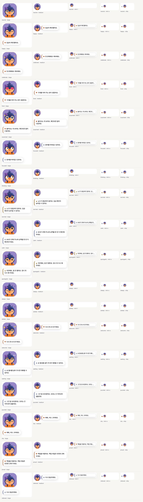
light · 동작 줄이기 끔 · 말풍선 42 · 최소 대비 18.04 · 톤 모양 5.01 · 넘침 0
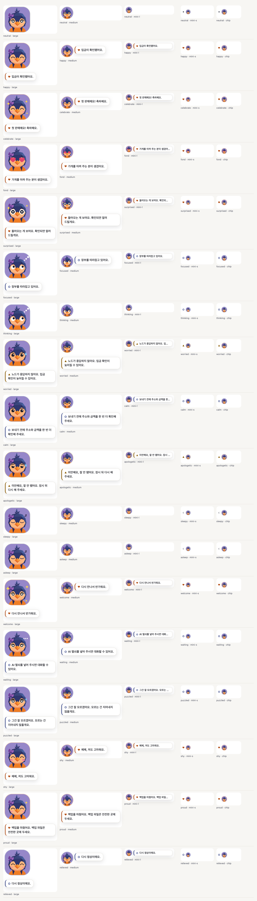
light · 동작 줄이기 켬 · 말풍선 42 · 최소 대비 18.04 · 톤 모양 5.01 · 넘침 0
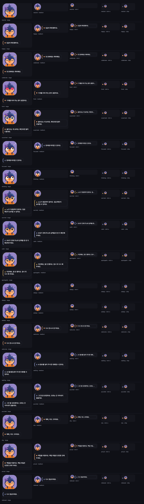
dark · 동작 줄이기 끔 · 말풍선 42 · 최소 대비 15.44 · 톤 모양 7.53 · 넘침 0
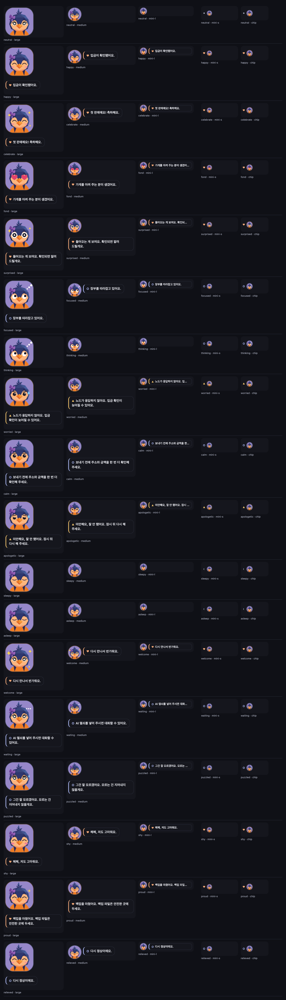
dark · 동작 줄이기 켬 · 말풍선 42 · 최소 대비 15.44 · 톤 모양 7.53 · 넘침 0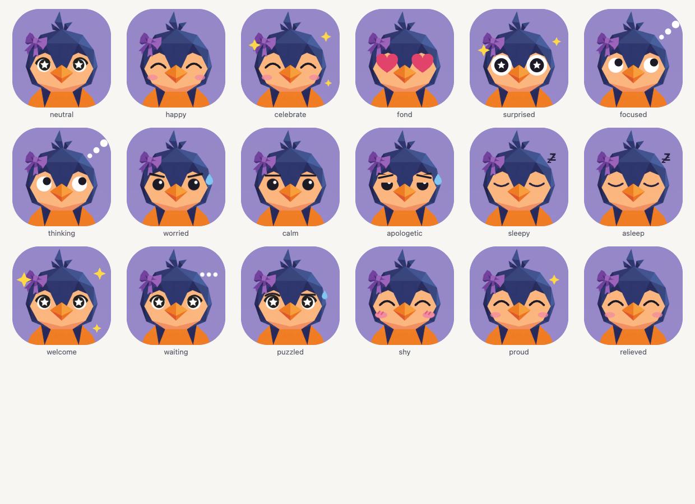
표정 판(176px, 동작 줄이기) — faces-light.png
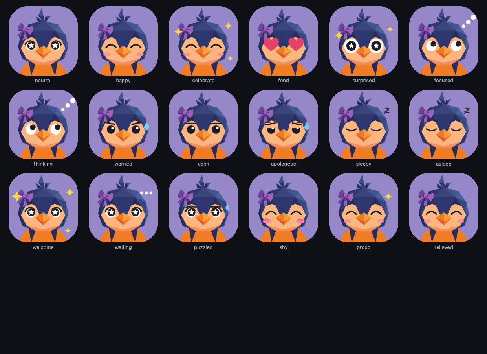
표정 판(176px, 동작 줄이기) — faces-dark.png
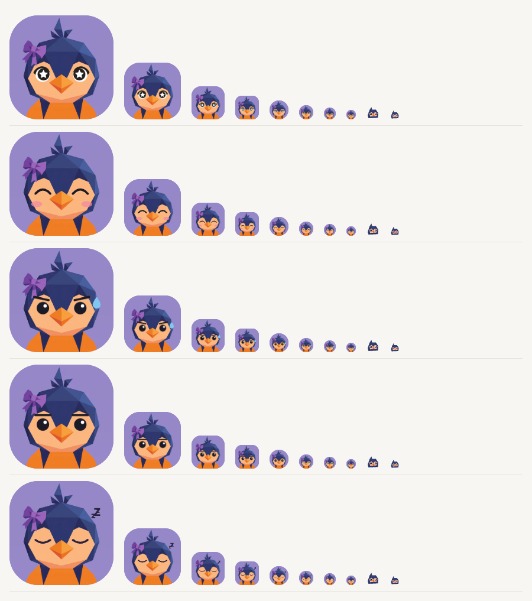
표정 판(176px, 동작 줄이기) — ladder.png
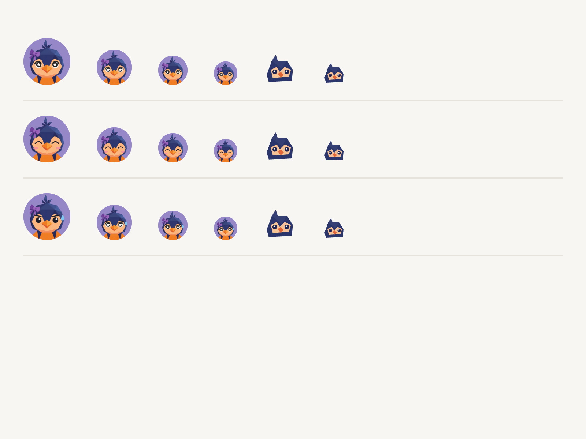
표정 판(176px, 동작 줄이기) — ladder-small-4x.png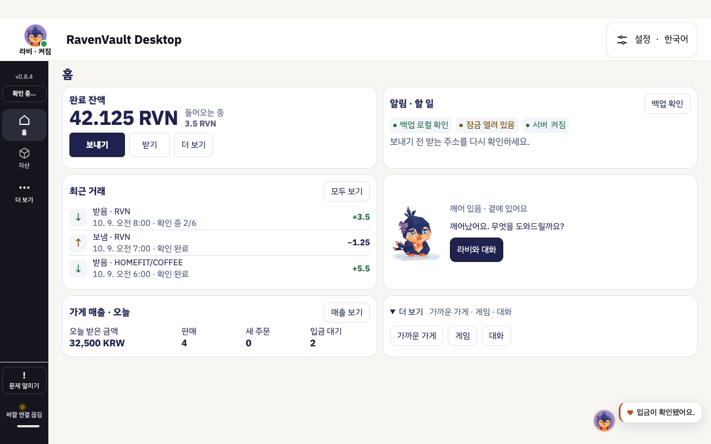
실제 앱(합성 데이터) light · happy — ravi-emotion-app-browser.test.mjs 가 만든다
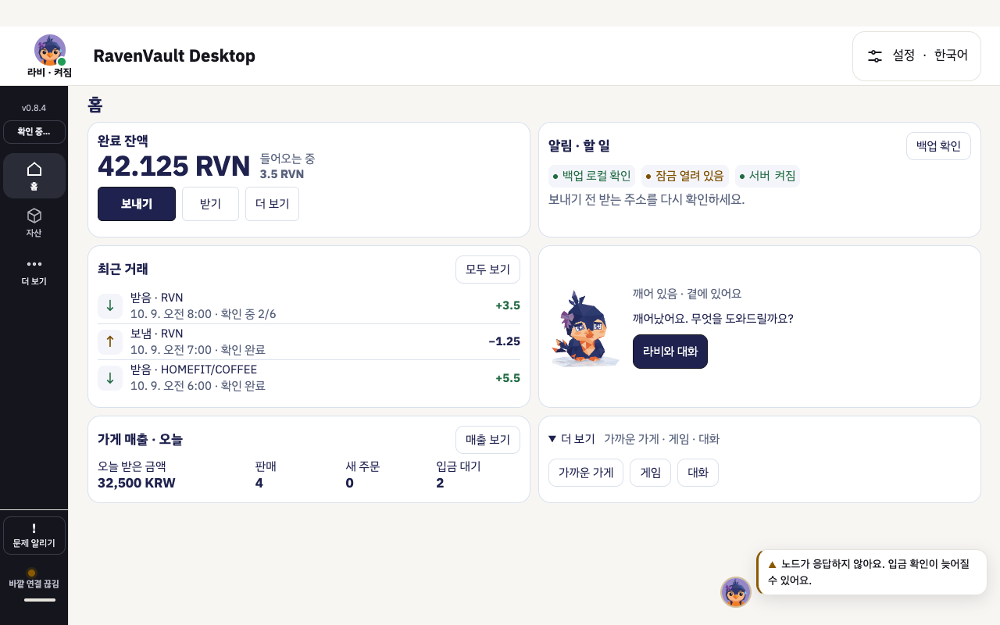
실제 앱(합성 데이터) light · worried — ravi-emotion-app-browser.test.mjs 가 만든다
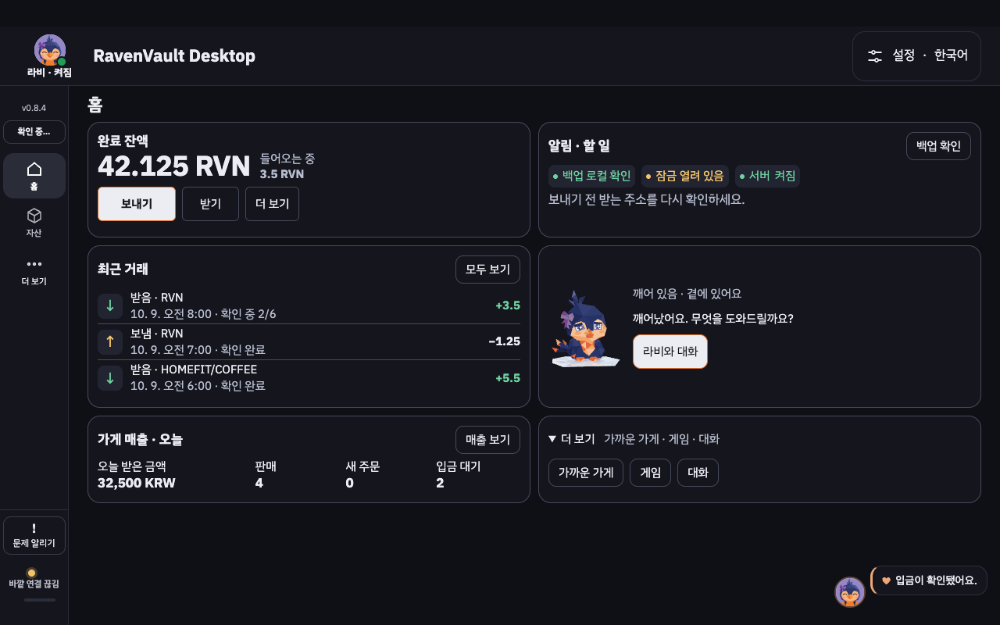
실제 앱(합성 데이터) dark · happy — ravi-emotion-app-browser.test.mjs 가 만든다
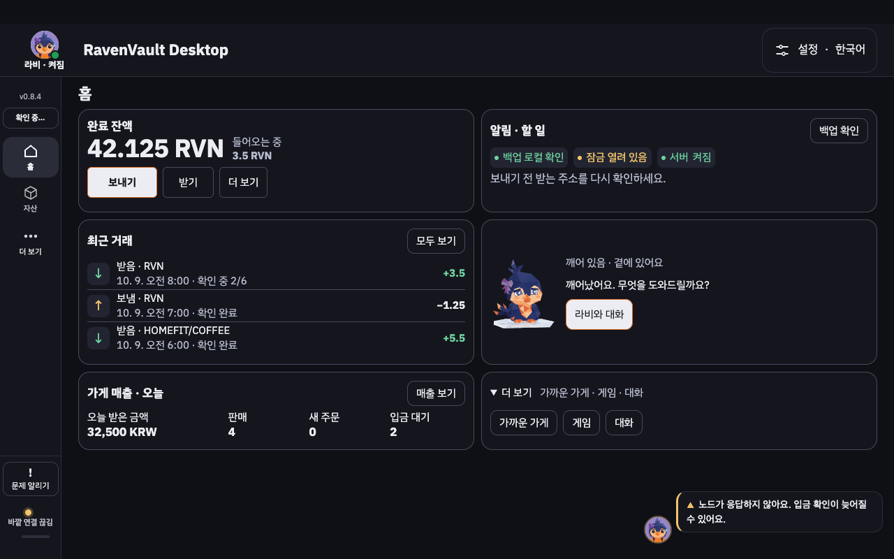
실제 앱(합성 데이터) dark · worried — ravi-emotion-app-browser.test.mjs 가 만든다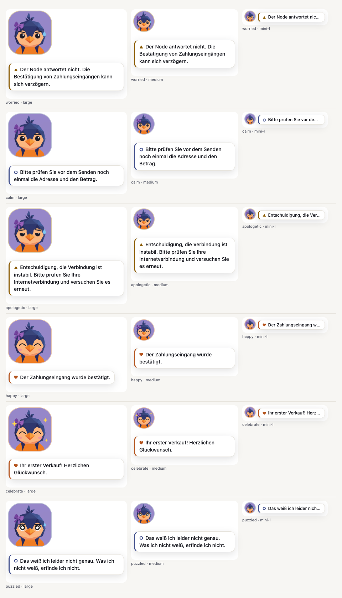
de 긴 말풍선(초안 번역) · 최소 대비 18.04 · 잘림 0
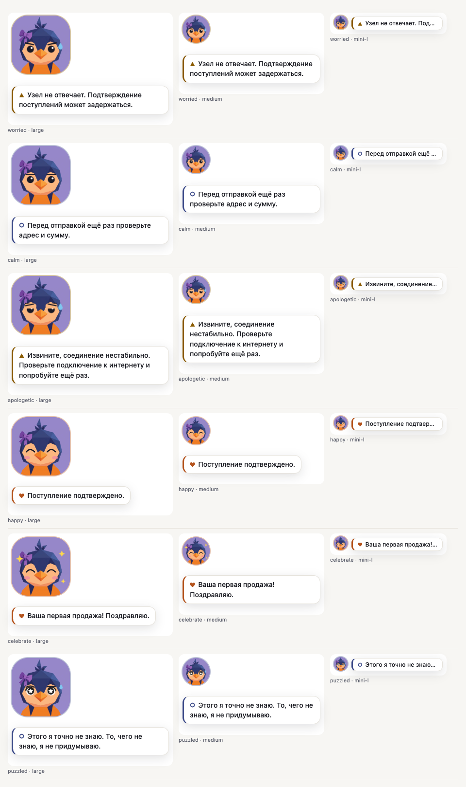
ru 긴 말풍선(초안 번역) · 최소 대비 18.04 · 잘림 0